<mat-toolbar class="header mat-primary">
  <agmp-logo class="header__fill-container"></agmp-logo>

  <span class="header__section">
    
    <span>User Login</span>
  </span>
  <span class="header__section">
    <agmp-button text="Log off" class="transparent">
      
    </agmp-button>
  </span>
</mat-toolbar>
